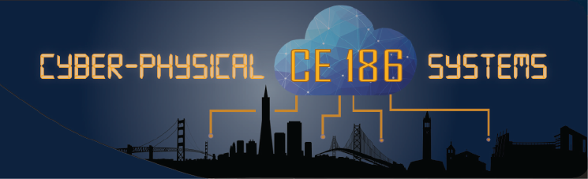
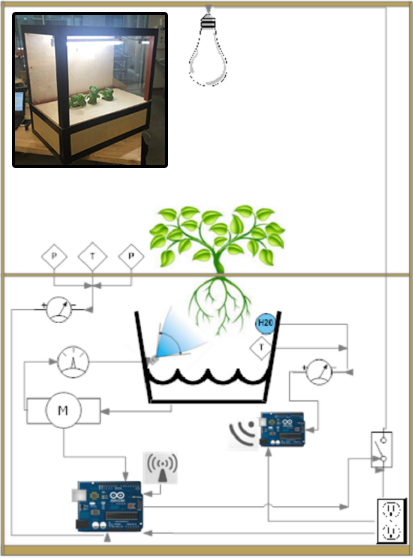
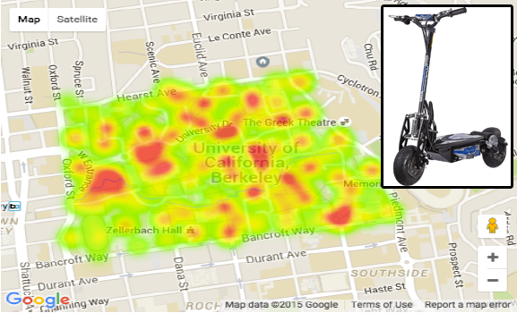
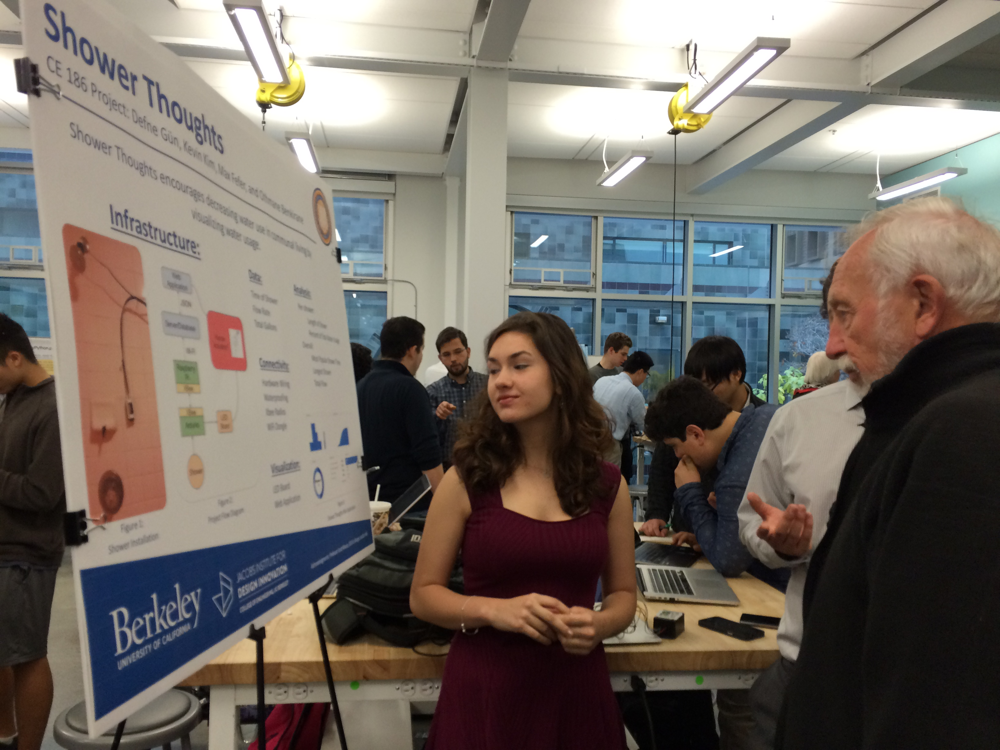
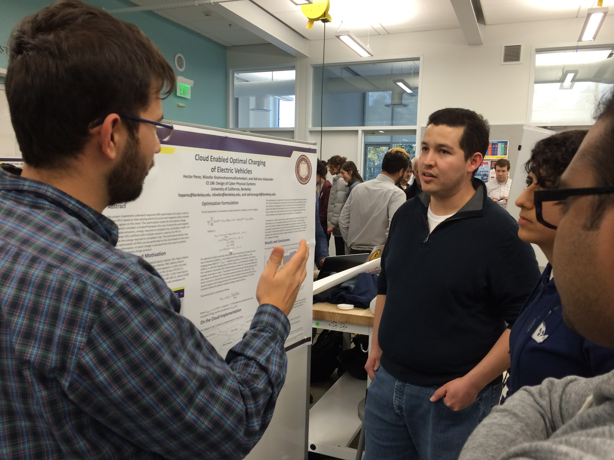
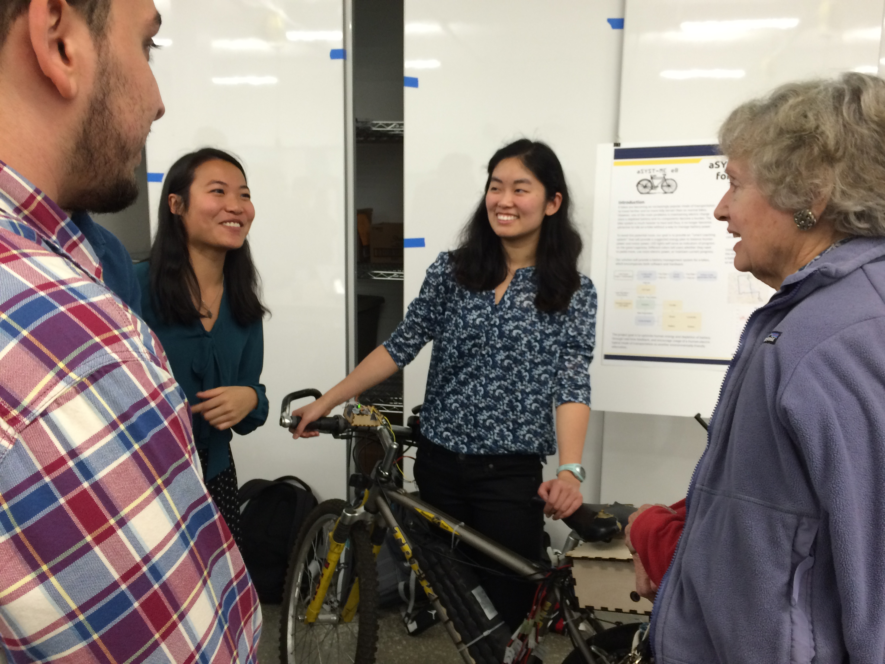

Catalog Description
Design and prototype of large-scale technology intensive systems. Design project incorporating infrastructure systems and areas such as transportation and hydrology; for example, watershed sensor networks, robot networks for environmental management, mobile Internet monitoring, open societal scale systems, crowd-sources applications, traffic management. Design of sensing and control systems, prototyping systems, and measures of system performance. Modeling, software and hardware implementation.
Project platforms: Smart Energy & Environment |  Smart Mobility |
Smart Mobility |  Smart Water | Smart Structures
Smart Water | Smart Structures
Smart Mobility | Smart Water | Smart Structures Lab Assignments from Fall 2016
| No. | Title |
|---|---|
| LAB1 | Intro to Arduino |
| LAB2 | Analog and Digital Sensors |
| LAB3 | Python for Scientific Computing |
| LAB4 | Internet-Based Systems with Python |
| LAB5 | Web Design and Visualization |
Project Slide Decks from Fall 2016
- FoCal: Smart Solar Cooking |
- BikeMe: Safer, fast bike parking |
- PESES: post earthquake structural evaluation system |
- mePV |
- Population Path |
- WowShow |
- Comfort Zone |
- Spatiotemporal PV |
- Expert in your "Field" |
- Go Green, Go Home |
Project Reports from Fall 2015
- Shower Thoughts: Tellefsen Hall Smart Water Monitor |
- Smart Water Irrigation System |
- Garduino: A Cyber-Physical Aeroponics System |
- MyWay: Personalized Campus Routing |
- Cloud Enabled Optimal Charging of Electric Vehicles |
- aSYST-ME eB: Automated System for Managing Energy in eBikes Battery Energy Coach |
- Automated Demand Response Refrigerator Project |
- HappyPython.py |
- Smart Personal Environment Regulator |
Smart Energy & Environment Platform

Smart Water Platform

Smart Mobility Platform



